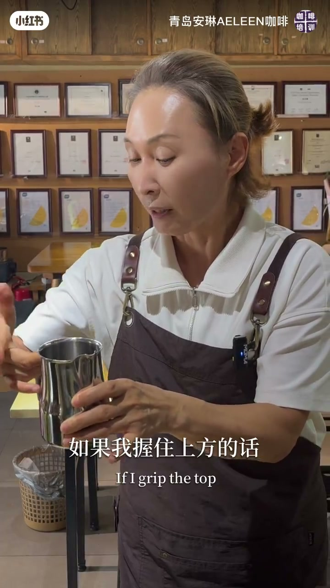
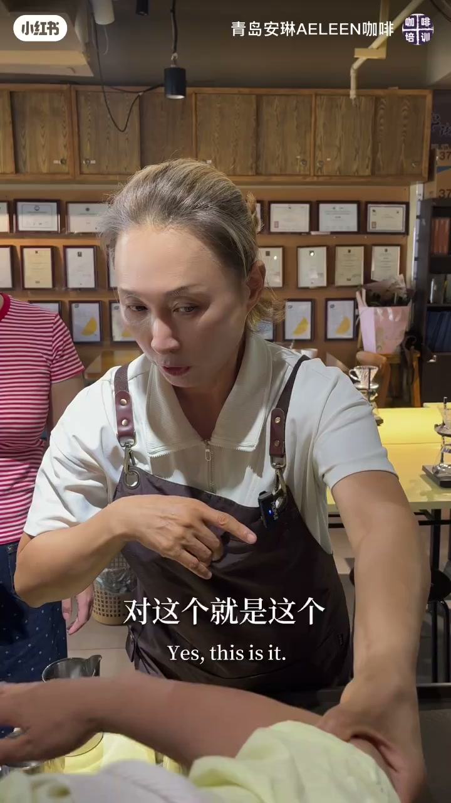
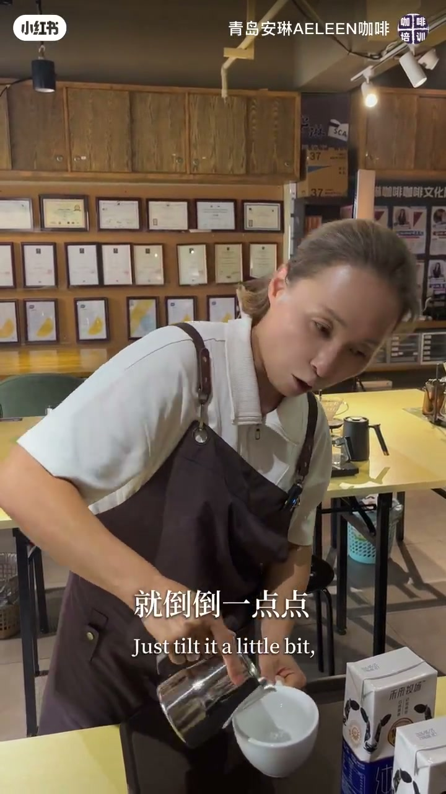
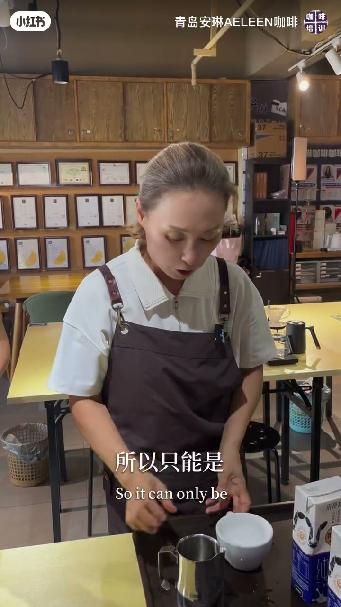

内容要点
一支 6 分 36 秒的咖啡拉花动作细节课：聚焦「为什么我总是拉不出稳定图案」这个核心问题，拆出三个关键动作——握奶缸的方法、用小臂而非手腕摆动、注入时身体倾斜而非手腕发力。每个动作都配了正反对比演示，跟着练就能稳定出图。
知识结构
第一种：两三个手指握奶缸下方，另两指轻轻放在两侧，双手几乎都握住缸。第二种：两指放上方轻轻扶住。共同点是手掌心不能贴住奶缸，要留出空间。
摆动用的是小臂，不是手腕。手背在上、胳膊比手腕高，前后摆动而非左右摆动。用手腕摆动时水流不稳定，用小臂摆动则血流稳定。
摆动时肩膀稍微往上抬一点点；需要注入大量牛奶时，不是用手腕倒，而是身体倾斜带动整个手臂倒奶。
端杯用手指拖着杯底或挂着杯沿，手指不能伸进杯子里；手腕与奶缸保持垂直，做图案时手腕不能弯曲。
拉花稳定出图的三个动作细节：①握奶缸不要贴掌心，留出空间；②摆动靠小臂、不靠手腕，肩膀微抬前后摆；③注入大流量时身体倾斜带动手臂。三个细节练好，图案自然稳定。
00:00-01:50握奶缸的两种方法
视频开门见山：「要拉花的时候，握奶缸的方法是非常重要的。」第一种握法：用两个或三个手指握在奶缸下方，另外两个手指轻轻放在两侧。关键在力量分布——「这两个几乎都握住奶缸，两个都是用力的；这两个是不用力的。」
第二种握法：如果握住上方，就把两个手指放在上面轻轻扶着。主播强调：「放的时候这个是不用力的，只是轻轻的握它。」两种方法可以按自己方便选择。
无论哪种握法，有个共同点必须守住：「不要碰到手心上，手心就要有一个空间。」手掌一旦贴死奶缸，动作就会僵硬，图案自然不稳。


00:20-03:40用小臂摆动，不是用手腕
握法之后是姿势。「我们用的是这个小臂。」主播一边演示一边强调：「这个（上臂）不动，这个（手腕）也不动，动的是这个小臂。」
标准的姿势是：手背在上面，胳膊比手腕高。「稍微抬高，我的胳膊是比它高的。」摆动方向也有讲究：「从我身体是前后摆动，不是这样（左右）摆动。」
为什么要用前后摆动？因为一旦用手腕，「我们的血流是非常不稳定的」——水流忽大忽小，图案就歪。主播现场对比：用手腕摆动时水流明显抖动，改用小臂后「非常稳定」。
摆动时还有一个隐藏要点：「肩膀稍微往上抬一点点。」如果没有抬起来，很容易又退回到用手腕和小臂乱甩的老路。



01:50-03:40注入大流量：身体倾斜，不靠手腕
「注入的时候，不能是手腕这么去倒（奶）。」第三个细节登场：当需要大量牛奶注入时，「我手腕不动，哪里动呢？身体在倾斜。」
主播解释原理：「用手腕去倒，这个流量是往垂直下去的；但拉花的原理是奶泡浮在咖啡表面的。」用身体倾斜带动整只手臂倒奶，奶泡才能顺着液面铺开。
这三点总结起来就是：「第一握法，第二小臂前后摆动，第三注入更多量的时候是整个身体在倾斜。」三个细节一起记住，稳定出图就有了抓手。

03:40-06:30端杯方式与垂直关系
讲完奶缸，主播补充了端咖啡杯的细节。「也可以这么拿，不要手心放在杯底。」正确做法是「用手指头拖着它」，或者「挂着它，挂一个拖一个」——两种都可以。
底线是：「手不能用杯子的任何里面」，手指绝不能伸进杯子里拿。
最后是手腕与奶缸的垂直关系：「这个手腕和奶缸的这个部分是垂直的。」做图案的过程中「这个手腕不要弯」，要抬起来。「千万不要用这个手腕」——拉花稳定出图的本质，就是让手腕始终保持稳定不发力。


完整转录（203段）
以下文本由 Whisper medium 模型自动转录，可能存在少量识别误差，已尽可能修正。
红肠要拉花的时候握奶缸的方法是非常重要的
第一握奶缸的方法是你握下面的时候
用两个或三个手指头可以握下面
然后这个两个放在轻轻的放在侧两侧
这是一个第一个握法
第一个握法
对
所以力量在哪里呢
是这个两个手几乎都握住我的奶缸
这个
这个两个都是用力的
这个两个是不用力的
这是第一个握法
第二个握法
如果我握住上方的话
那我这个两个手指头是放上面的
看你们哪个方便
这么放
ok 这么放
ok
放的时候这个是不用力的
只是轻轻的握它就可以了
轻轻的握它
你看我的手指头这样握它
是这个状态
这是握法
两种握法
总之我这个握法是不要靠近
不要碰到我的手心上
这个手心
就要有一个空间就可以了
两种方法握下面是这样握
握上面是这么一个握法
这是第一握奶缸的握法
然后我们的姿势是这样子的
我们用的是这个小臂
这个臂
这个不动
这个也不动
动的是这个臂
所以尽可能我的
你先放下你们的奶缸
尽可能我手背在上面的时候
我的姿势是这样子的
稍微这个抬高
稍微抬高对
我的这个胳膊是比它高
对比它高不能是这个状态
比它高
我用的是这个力量
我用的摆动是这个摆动
这个摆动是在
从我身体是在前后摆动
不是在这样摆动
对
对前后
前后摆动
不是这个是手在摆动
对
这个就是这个就是摆动
对
如果我们是这么拿的话
可能在我用手心来这样摆动
所以
重点是我们不能用
任何的手腕
用的是哪里这里
也就是轻轻的握我的奶缸之后
是吧
我们可以看看我的动作
我用的是哪里呢
我可以看看
是不是小臂
是不是小臂
但我再用一个
这是哪里
手腕
用手腕的时候
我们的血流是非常不稳定的
可以看到我用我的手腕
不稳定
但是我稳定我的血流
非常稳定是吧
所以我们用的是这个臂
小臂不要忘记
所以一个是握法
一个是用的是这个部分
这个部分
然后姿势是在
我在我身体为主是
前后摆动
不是这样摆动
前后摆动
前后摆动
所以其实是我这个
这个叫什么肩膀
稍微往上一点点的
稍微往上抬一点点
如果你没有抬的话
那么有可能是我们会用到
这个臂
这个手腕
所以我们在
注入的时候
我们需要大量的牛奶注入的时候
我们看油脂稳定之后
我们注入的时候
注入的时候
不能是手腕这么去倒肉
是应该在哪里呢
我手腕不动
哪里动呢
身体在倾斜
身体在倾斜
身体在倾斜就倒
倒一点点就可以了
为什么我在动手腕的时候
我们可以看
这个是这样倒的
它是
这个流量是往
往垂直下去的
但是拉花的原理是
其实在奶泡浮在我的咖啡表面的
明白吧
所以
三个点
一个是握奶缸的方法
第一第二
我们这些
动作是
动作是这种的动作
用的是小臂
当我需要更多的牛奶要倒入的时候
我倒的用的不是手腕
而是什么
整个这个臂
这个右手和这个肩膀是稍微倾斜
倾斜
这个动作
所以一二三一定要知道
握法
小臂
前后小臂摆动
注入更多的量的时候在哪里呢
整个
整个在倾斜
对
这才能倒出来
这三个一样不要忘记
OK了吗
是也可以这么拿
这么拿
不要这么放
不要手心放在我的杯底
不要这么放
尽可能手指头
拖着它
拖着它
这是第一
或者是我一般是
挂着它
挂一个拖一个
这样
也可以的
两种
也就是说你这个手指头也可以这么拿
也可以这么拿
没有关系
但是不能做的是什么
这种
这种拿不可以的
我的手不能用杯子任何的里面
不可以的
这是一个
还有
这个手腕和奶缸的这个部分是垂直的
垂直
也就是你不能这么拿
但是平衡是
那么最后你拉出来的话是
当我的客人喝的时候
我的图案是在
这个是在右手的时候
我的图案在这个
这是正上方
我的图案是这个样子的
明白吧
所以只能是什么
这个吧和这个吧是垂直
垂直
垂直
这个和这个是垂直的
做的当中也不能这么去做
那不叫垂直
是这个是垂直的
是吧
你要这个和这个是垂直的
做的时候是这个是垂直的
但这个手腕不要弯
所以这个抬起来
明白吧
所以千万不要用这个手腕